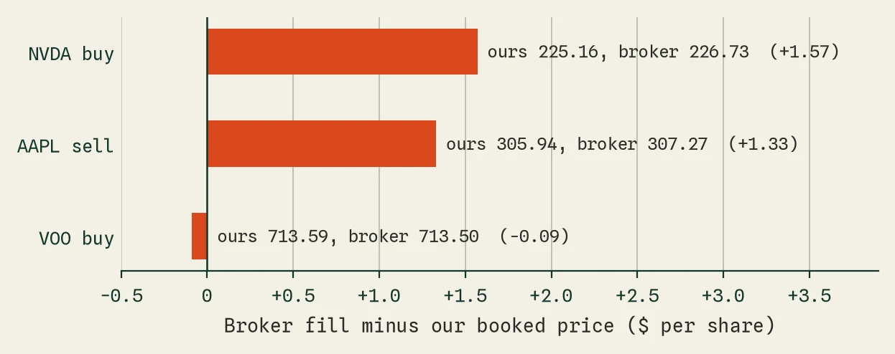
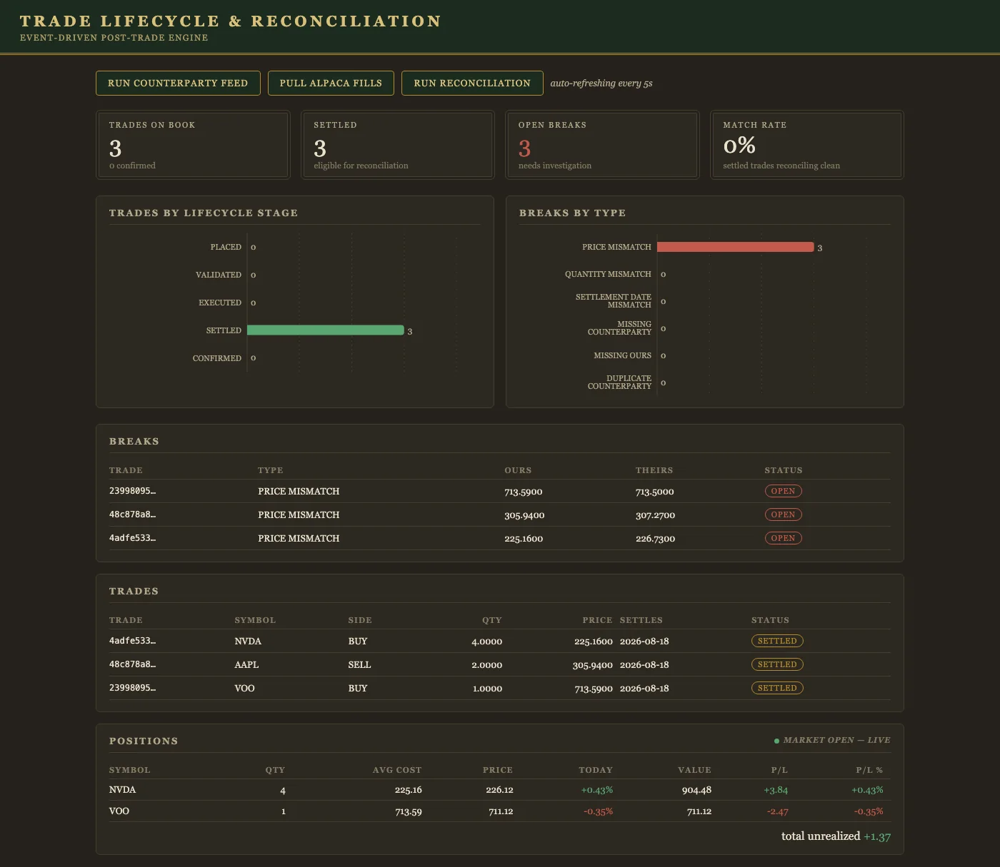

Trade lifecycle and reconciliation engine
| Stack | Python, FastAPI, PostgreSQL, Kafka, Kubernetes, Terraform, AWS (EKS, MSK, RDS) |
|---|---|
| Result | Caught 3 real price breaks on its first live run, with no false positives |
| Tests | 67, run in GitHub Actions against a real Postgres container |
| Code | github.com/Mohit-web12/trade-lifecycle-engine |
The question
When a trade executes, both parties keep their own record of it. Those records disagree more often than you'd think: a price off by a cent, a settlement date shifted by a day, a trade one side dropped. Somebody in the back office has to find each of those breaks and explain it. I wanted to build the system that finds them, and to learn the infrastructure a system like that actually runs on.
| Field | Our bookNVDA buy | Match | Broker fillNVDA buy |
|---|---|---|---|
| Trade | 4adfe533… | matches | 4adfe533… |
| Quantity | 4.0000 | matches | 4.0000 |
| Price | 225.1600 | does not match | 226.7300 |
| Settles | 2026-08-18 | matches | 2026-08-18 |
What I did
I built the logic first and the infrastructure second, so the hard part worked before Kafka or AWS could get in the way.
- An event log, not a status column. Every trade moves through five stages: placed, validated, executed, settled, confirmed. Each step is one immutable row in an append only
trade_eventstable. The current state of a trade is rebuilt from that log, so the log doubles as the audit trail. - A counterparty that lies on purpose. A generator plays the other side. It copies each trade faithfully most of the time and sometimes corrupts it, so the demo always has something to catch.
- One hand written query. Reconciliation is raw SQL, not the ORM, because it's the part that has to be exactly right.
WITH cp AS ( -- collapse duplicates first
SELECT trade_id, COUNT(*) AS record_count,
MAX(price) AS price, MAX(quantity) AS quantity,
MAX(settlement_date) AS settlement_date
FROM counterparty_records GROUP BY trade_id
)
SELECT COALESCE(t.trade_id, cp.trade_id) AS trade_id,
t.trade_id IS NULL AS missing_ours,
cp.trade_id IS NULL AS missing_counterparty,
COALESCE(cp.record_count, 0) > 1 AS duplicated,
(t.trade_id IS NOT NULL AND cp.trade_id IS NOT NULL
AND t.price IS DISTINCT FROM cp.price) AS price_mismatch
-- same test for quantity and settlement date
FROM trades t
FULL OUTER JOIN cp ON cp.trade_id = t.trade_id
WHERE t.settlement_date IS NOT NULL -- our settled trades
OR t.trade_id IS NULL; -- plus their orphansAbridged from reconciliation/queries.py.
Three details in that query do most of the work. The counterparty side gets grouped before the join, so a duplicated record shows up as a count of two instead of fanning out into extra rows. It uses IS DISTINCT FROM instead of <>, because NULL <> 5 is null, not true, and a plain comparison silently misses exactly the rows reconciliation exists for. And it's a FULL OUTER JOIN, because a trade can exist on only one side.
| Break | What it means |
|---|---|
PRICE_MISMATCH | Both sides have the trade at different prices |
QUANTITY_MISMATCH | Same trade, different share count |
SETTLEMENT_DATE_MISMATCH | Same trade, different settlement day |
MISSING_COUNTERPARTY | We booked it, they have no record |
MISSING_OURS | They have a record we never booked |
DUPLICATE_COUNTERPARTY | They sent the same trade twice |
Then I moved the stages onto Kafka. Kafka delivers at least once, so the same event can arrive twice. The projector writes a (consumer, event_id) row in the same transaction as its update, so a redelivered event hits the primary key and is skipped. It also rebuilds the trade from its whole log instead of applying the message, so events that arrive out of order still land in the right state.
Last came the cloud. I wrote Kubernetes manifests, ran them on a local kind cluster, then used Terraform to stand up EKS, MSK and RDS on AWS. I ran the full demo there, saved the evidence, and tore everything down the same session. It cost about a dollar. Left running, it would have been around $240 a month.
What I found
The real test was a broker. I placed three orders in an Alpaca paper trading account on a Saturday and booked them in the engine at Friday's closing prices, which is what you'd write down when you place an order. They filled at Monday's open. The engine flagged all three as price breaks and nothing else.


The test suite has 67 tests. Pure logic like the state machine and break classification runs without a database. Service and API tests run against real Postgres in CI. One Kafka round trip test skips itself there because CI has no broker, so CI runs 66.
What I'd do next
- Add a dead letter topic. Right now a message whose handler always fails blocks its partition forever.
- Carry a break's status (acknowledged, resolved) across reconciliation runs. Each run is a fresh snapshot today, so that work gets lost.
- Move database migrations out of gateway startup into a Kubernetes Job, so the gateway can safely run more than one replica.
- Show short positions. The positions view only handles long ones.